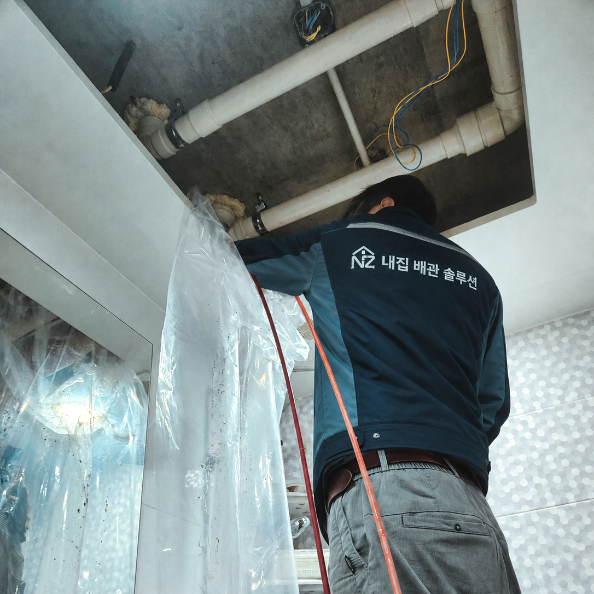

“뚫었는데 또 막히면?”
잠깐 물이 내려가는 것과 원인을 정리하는 것은 다를 수 있습니다. 반복되는 이유부터 살펴봅니다.
생활의 물길을 다시 편안하게
갑작스러운 막힘부터 반복되는 역류·냄새까지.
현장 상태를 확인하고, 필요한 작업과 비용을
설명한 뒤 진행합니다.
하수구 · 싱크대 · 변기 · 욕실 냄새 · 배관 내시경 · 고압세척

보이는 증상과 실제 막힌 위치는 다를 수 있습니다.
작업 흐름을 표현한 모션 그래픽입니다.BEFORE YOU CALL
급한 순간에도 작업을 이해하고 선택하실 수 있도록.
잠깐 물이 내려가는 것과 원인을 정리하는 것은 다를 수 있습니다. 반복되는 이유부터 살펴봅니다.
고압세척이나 특수 장비, 배관공사가 꼭 필요한 것은 아닙니다. 현장에 맞는 방법을 설명합니다.
어떤 작업에 얼마가 드는지, 비용에 포함되는 범위를 먼저 설명합니다. 추가 작업이 필요하면 이유와 금액을 안내하고 확인을 받은 뒤 진행합니다.
PROOF, NOT JUST PROMISES
현장 기록에 남아 있는 문제와 해결 과정을 소개합니다.
좌우 버튼을 누르거나 옆으로 밀어보세요.
THE NZ STANDARD
증상이 비슷해도 원인과 필요한 작업은 다를 수 있습니다.
고객이 겪은 증상과 현장 구조를 함께 확인합니다. 필요한 경우 내시경으로 보이지 않는 구간까지 살펴봅니다.
장비 이름만 나열하지 않습니다. 현장 상태에 맞는 작업 방법과 범위, 비용을 이해하기 쉽게 설명합니다.
물 빠짐과 역류 등 해당 증상에 맞춰 결과를 확인하고, 관리 시 주의할 점을 안내합니다.
내집처럼 살피고, 납득할 수 있도록 설명합니다.
TRANSPARENT BEFORE WORK
어떤 작업에 얼마가 드는지, 어디까지 포함되는지 먼저 설명합니다. 현장 확인 후 작업 범위와 금액을 안내하고, 고객이 확인한 뒤 진행합니다.
작업과 비용 상담하기 ↗궁금한 작업 항목을 눌러 가격을 확인하세요.
욕실, 베란다, 세탁실 배수구 흡입 작업
배수구 입구가 아닌, 안쪽 연결 배관에서 발생한 막힘
천장 내부 P트랩 배관 점검, 사다리 작업, 점검구를 통한 막힘 제거
공용배관 막힘과 여러 세대에 영향을 주는 역류 문제 작업
기름때와 배관 내부 오염물 고압세척
배수구·배관 냄새의 발생 위치와 원인 점검
단순 관통기 작업 · 휴지와 배변 등 가벼운 막힘
흡입 장비로 물티슈·장난감 등 이물질 제거
변기 분리·이물질 제거 후 재설치
변기 탈거 후 오수관 깊은 막힘 제거
제품·설치 환경 확인 후 안내
물탱크 내부 부속 교체
주름관 내부 막힘 작업·흡입 작업
벽체 또는 바닥 연결 배관의 기름때와 누적 오염 제거
배수호스와 연결 부속 교체
머리카락, 비누때 등 단순 막힘
세면대 팝업과 하부 트랩 교체
기존 수전 철거 후 교체
장비로 누수 여부와 의심 위치 확인
작업 전 사유와 총비용을 안내하며, 고객 동의 후 진행합니다.
QUESTIONS & ANSWERS
상황을 알려주시면 확인 순서부터 안내하겠습니다.
이전 작업 시점과 사용한 방법을 먼저 확인합니다. 이후 현장에서 배관 구조와 내부 상태를 점검해 정확한 원인을 파악하고, 왜 다시 막혔는지와 어떤 작업이 필요한지 설명드립니다.
사진은 증상 파악과 작업 준비에 도움이 됩니다. 다만 안쪽 상태와 구조를 확인해야 하는 경우가 있어 최종 작업 범위와 비용은 현장 확인 후 안내합니다. 출장비는 없으니 방문 부담 없이 문의해주세요. 게임에서 쿠폰도 획득해보세요. 쿠폰별 사용 조건을 확인하실 수 있습니다.
쿠폰 획득하러 가기 ↗직접 상담하고 직접 출동합니다. 강동구를 중심으로 서울·하남·성남 지역에 방문하며, 이외 지역은 문의해주세요.
모든 막힘에 필요한 것은 아닙니다. 막힌 원인과 범위, 배관 상태와 접근 조건을 확인해 적합한 작업 방법을 안내합니다.
LET'S RESTORE YOUR FLOW
지역과 문제 위치, 증상을 알려주세요.
가능한 확인 순서와 방문 일정을 안내하겠습니다.
사진·영상이 있으면 함께 보내주세요.
최종 판단은 현장 상태를 확인한 뒤 안내합니다.